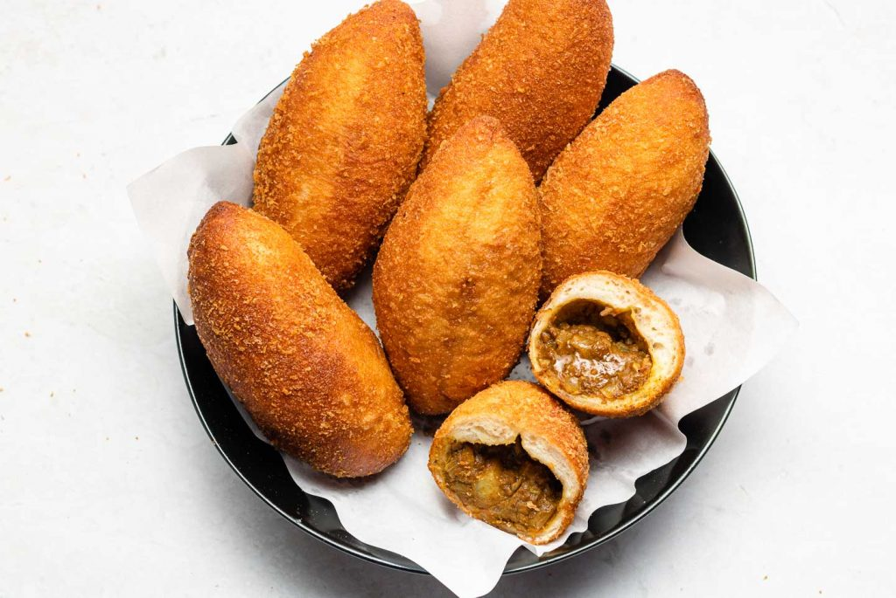

Karē pan is a Japanese delicacy made by stuffing the breaded dough with curry paste and deep-frying the combination in hot oil until it becomes golden brown in color. The dish is also known as curry doughnut, and it is a variety of okazu-pan, referring to breads with savory fillings. Once the crispy crust has been bitten into, the consumer is rewarded with mouthfuls of thick, rich curry. Karē pan is mostly consumed as a snack and can be bought at numerous street stalls, bakeries, and convenience stores throughout Japan. Since curry-flavored anything is a big hit in Japan, karē pan is one of the most popular okazu pan varieties today.
Meal prep time : 1 hour 50 minutes
Servings : 8